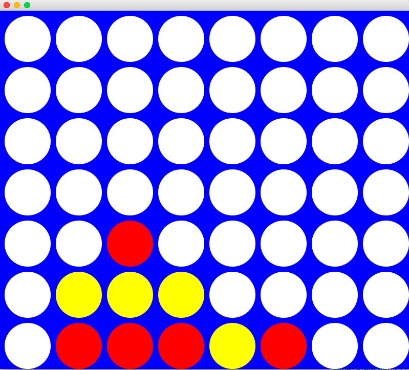
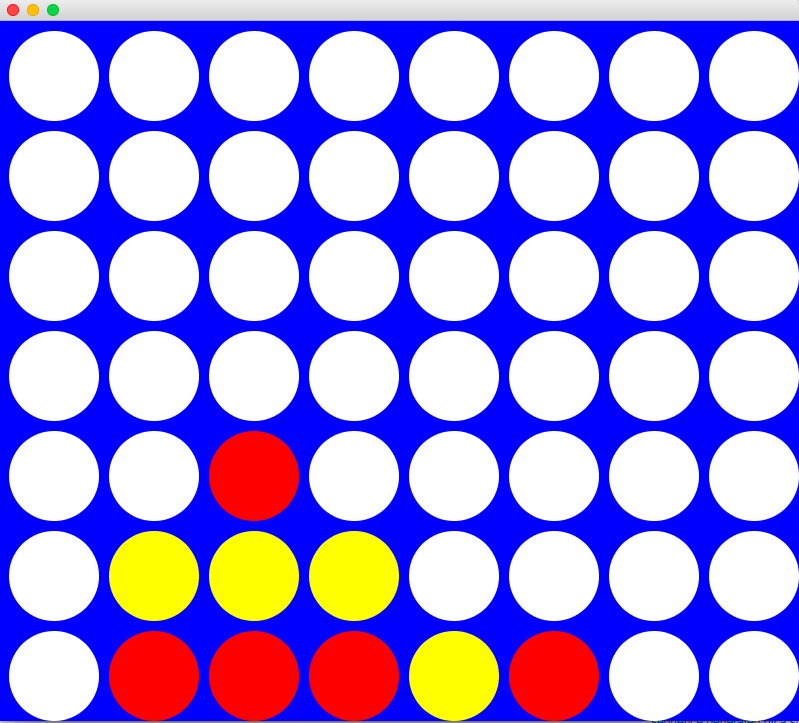

What I've been up to.


B.S. in Computer & Information Science
 Mechanicsburg, PA
Mechanicsburg, PA
 Anticipated Graduation: May 2017
Anticipated Graduation: May 2017
My past four years of frisbee-throwing, Jesus-loving, endless coding as a computer science student at Messiah College have been wonderful and full of personal growth. Through the dedication of my phenonminal professors I was pushed, changed, and challenged mentally, emotionally, intellectually, and spiritually. Messiah has given me what I love, fueled my desire for learning and innovative technology, and surrounded me with brilliant, incredible people who have invested in my growth and success.


Software Engineer Intern
Palo Alto, CA
May 2016 - August 2106
Knowledge Acquired: Go, REST API Development, Android Development, test-driven development
Working with Nest was my first exposure to joys of the Valley. Working on the Works with Nest store site and the Nest Developers site gave me incredible experience with website and API development. During these months I worked on improving different integration sample code for the Nest API, I took part in designing the product collections feature, I had the previledge of being a mentor and representative of Nest for the 2016 Spring MLH Hackathon Finale. I gained valuable insight and real world experience about what it is like to work in the industry.


Information Technition Intern
London, UK
January 2016 - April 2016
Knowledge Acquired: Active Directory, Powershell, .NET, System Center Configuration Manager, Excel Macro Development
In the Spring of 2016, I studied abroad in London. Along with my classes during this semester, I had an internship with Mizuho, a Japanese Fiancial Corporation, in their Information Technology Department. While learning about the proper way to make tea and immersing myself in another culture, I spent my time there developing macros for Microsoft Excel and writing .NET scripts to interact with Microsoft's Active Directory. Beyond gaining exposure to the development side of Microsoft products, I just had the joy of living in a different country and experiencing the utmost importance of a biscuit tin and what it does for team morale.


 
